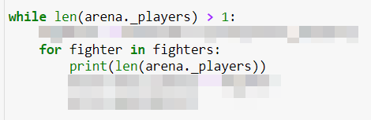

הרצתי גרסה פשוטה של הסימולציה (כרגע ללא המורכבות הנוספת של נקודות נסיון ורמות) כדי לראות שאני בכיוון הנכון. הרצתי לולאת while שתנאי העצירה שלה הוא כאשר אורך רשימת השחקנים בזירה יורד ל1 (כלומר כאשר יש מנצח). נתקלתי בהודעת שגיאה שקשורה לאורך הרשימה אז ביקשתי מהתוכנית שתדפיס את אורך רשימת השחקנים (שהיא כמובן תכונה של הזירה) לאחר כל תור. מסיבה שלא ברורה לי, הלולאה ממשיכה לרוץ גם כאשר אורך הרשימה שווה ל1 (התנאי שהצבתי להמשך הלולאה הוא “כל עוד אורך רשימת השחקנים גדול מ1”) ומדפיסה את אורך הרשימה (“1”) עוד מספר פעמים עד שהיא נתקעת מסיבה אחרת (דבר שלא היה קורה אם הלולאה הייתה מסתיימת כשיש מנצח). אני לא מבין איך דבר כזה יכול לקרות. למישהו יש רעיון?
- אתה מנסה להשוות בין מחרוזת למספר?
- אף אחד לא מת אף פעם מאיזושהי סיבה?
- התנאי הוא == או משהו בסגנון, ו־2 אנשים מתים באותו סיבוב?
הפתרון הוא להדפיס את כל הפרטים בכל איטרציה של הלולאה כדי להבין מה קורה
לייק 1
התכנית מדפיסה בכל סיבוב את אורך רשימת השחקנים. כרגע הדבר היחיד הנוסף שהיא מדפיסה זה מצב שבו מישהו נוסף לרשימת האויבים של מישהו אחר (סתם שארית מהקוד הקודם). כפי שניתן לראות מהתמונות, תנאי העצירה אומר “אם אורך רשימת השחקנים שווה 1, תעצור” ללא שימוש ב “==”. לקראת הרגע שבו התכנית נתקעת, רשימת השחקנים נמצאת על “1” מספר פעמים, והלולאה עדיין רצה (כלומר אין מצב ששני אנשים מתים באותו סיבוב, וגם לא נראה לי שהקוד שכתבתי יאפשר כזה דבר). התכנית נתקעת כי היא מנסה לבחור אויב חדש מתוך רשימה ריקה כי התוכנית בוחרת מתוך רשימה מקוצרת שלא כוללת את השחקן עצמו (אז רשימה של 1 הופכת לרשימה ריקה), אבל כמובן שלא שיערתי שבכלל יהיה אפשרי להגיע למצב הזה כי הלולאה הייתה אמורה לעצור לפני שדבר כזה יכול לקרות. יכול להיות שזה קשור לשימוש שלי במודול שמאפשר ללולאה לרוץ על רשימת השחקנים באופן מחזורי?

{kind=link}
לייק 1
שים את ה־print מיד אחרי ה־while ואתה תראה שהוא מתחיל ב־2 ויורד ל־1.
הלולאה עוצרת רק כשאתה מגיע לראש הלולאה והתנאי נבדק.
התנאי בראש הלולאה לא נבדק כל שורה שרצה בתוך הלולאה.
(הלייק על שמות השחקנים)
2 לייקים
אוקיי, שאלה נוספת - האם בשלב הזה מותר כבר להשתמש ב break, או שאני צריך למצוא דרך אחרת לעבור באופן מחזורי על רשימת השחקנים, כזו שלא כוללת את המתודה שרצה באופן אינסופי?
אסור להשתמש בbreak. זו עובדה שצריך ללמוד להשלים איתה עד סוף הקורס.
יש דרכים אלגנטיות להתמודד עם בעיות כאלה 
לייק 1
אם אתה מרגיש שאתה חייב להשתמש ב־break בשלב הזה כנראה שיש בעיית עיצוב.
נסה לפצל לפונקציות, להכניס דברים לפעולות או לשנות את מבנה הקוד כך שיפתור את הבעיה